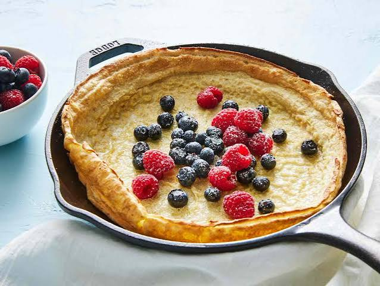

A dutch baby is a delicious, protien-laden breakfast that still satisfies an urge for something sweet. When I was a child and my parents let us cook breakfast, I always opted for the simple, beautiful dutch baby.
Some may know this dish by another name, a german pancake or pop-over. Whatever you may call this dish, rest assured that every culture familiar with it has mastered the art of making it. I hope you'll find that my personal recipe lives up to their standards.